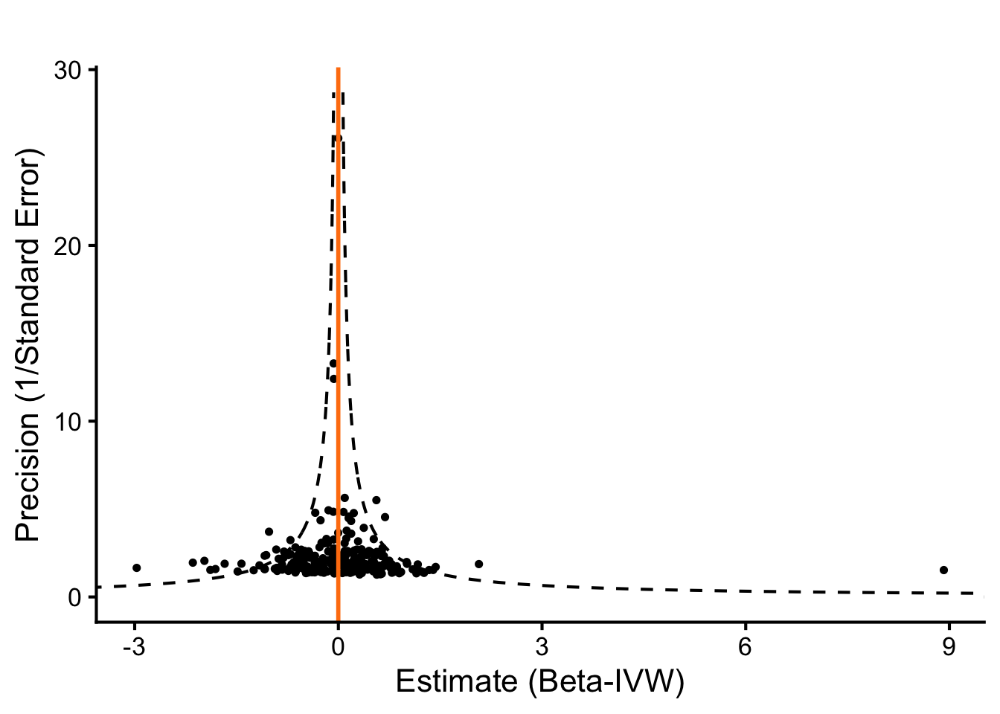
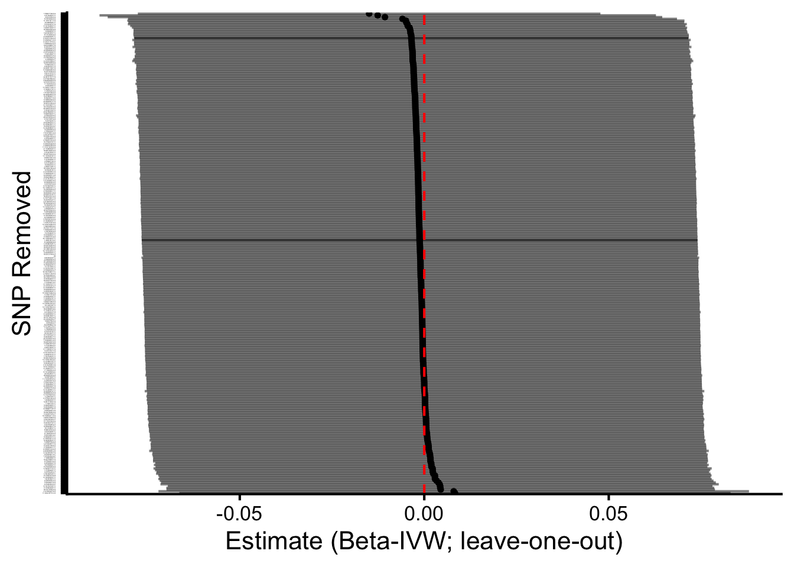

MR Analysis of SNPs for Calcium and their Effect on LDL Cholesterol
Author
Dave Bridges
Published
October 14, 2025
Show the code
# hide this code chunk#| echo: false#| message: false# defines the se functionse <-function(x) {sd(x, na.rm =TRUE) /sqrt(length(x))}#load these packages, nearly always neededlibrary(tidyverse)library(knitr)# sets maize and blue color schemecolor_scheme <-c("#00274c", "#ffcb05")
Purpose
To validate SNPs for calcium GWAS using those identified using UK Biobank. This script can be found in /Users/davebrid/Documents/GitHub/PrecisionNutrition/Human Genetics and was most recently run on Fri Oct 17 10:51:36 2025
Data Entry
Show the code
instruments.calcium.file <-'Calcium Instruments from UKBB.csv'gwas.ldlc.file <-'PheWeb Summary Statistics/phenocode-LDL.tsv.gz'samplesize.outcome.ldlc <-46100# loaded and renamed columnsinstruments.calcium <-read_csv(instruments.calcium.file) |>rename(SNP = SP2,beta.exposure = BETA,se.exposure = SE,effect_allele.exposure = EA,other_allele.exposure = OA,pval.exposure = P,eaf.exposure = ALT_FREQS,samplesize.exposure = N_exposure ) |>mutate(id.exposure="Calcium (UK Biobank)",exposure="Calcium (UK Biobank)")gwas.ldlc <-read_tsv(gwas.ldlc.file) |>mutate(ID=paste(chrom, pos, ref,alt, sep=":")) |>rename(SNP = ID, # or ID if that’s the matching IDbeta.outcome = beta,se.outcome = sebeta,effect_allele.outcome = alt, # whichever is effect alleleother_allele.outcome = ref, # whichever is other allelepval.outcome = pval,eaf.outcome = maf, ) |>mutate(id.outcome ="LDL Cholesterol (MGI-BioVU LabWAS)",outcome ="LDL Cholesterol (MGI-BioVU LabWAS)",samplesize.outcome = samplesize.outcome.ldlc) # sample size for MGI/BioVU for calcium)
This presumes the sample sizes was 46100 from Table 1 of https://doi.org/10.1371/journal.pgen.1009077.
Loaded in the instruments for calcium from UK Biobank from the datafile Calcium Instruments from UKBB.csv and the GWAS summary statistics for calcium from the datafile PheWeb Summary Statistics/phenocode-LDL.tsv.gz.
Show the code
library(TwoSampleMR)data <-harmonise_data(instruments.calcium, gwas.ldlc, action =2)table(data$mr_keep) |>kable(caption="Number of SNPs kept for MR analysis")
Number of SNPs kept for MR analysis
Var1
Freq
FALSE
2
TRUE
275
Show the code
table(data$palindromic) |>kable(caption="Number of palindromic SNPs")
Number of palindromic SNPs
Var1
Freq
FALSE
255
TRUE
22
Show the code
data <- data %>%mutate(allele_match = (toupper(effect_allele.exposure) ==toupper(effect_allele.outcome)) & (toupper(other_allele.exposure) ==toupper(other_allele.outcome)),allele_swapped = (toupper(effect_allele.exposure) ==toupper(other_allele.outcome)) & (toupper(other_allele.exposure) ==toupper(effect_allele.outcome)) )# 2) EAF concordance checks (detect possible strand/orientation issues)# requires eaf.exposure and eaf.outcome presentif(all(c("eaf.exposure","eaf.outcome") %in%names(data))){ data <- data %>%mutate(eaf_diff =abs(eaf.exposure - eaf.outcome),eaf_flip_diff =abs(eaf.exposure - (1- eaf.outcome)),suspicious_eaf = (eaf_diff >0.2& eaf_flip_diff >0.2) # very different frequencies )summary(data$eaf_diff)summary(data$eaf_flip_diff)cat("Num suspicious EAFs:", sum(data$suspicious_eaf, na.rm=TRUE), "\n")} else {cat("No EAF columns present for both datasets; consider adding reference panel EAFs.\n")}
Num suspicious EAFs: 0
Show the code
# 3) List discordant SNPsdata <- data %>%mutate(sign_match =sign(beta.exposure) ==sign(beta.outcome))discordant <- data %>%filter(!sign_match) %>%select(SNP, beta.exposure, se.exposure, beta.outcome, se.outcome, effect_allele.exposure, other_allele.exposure, effect_allele.outcome, other_allele.outcome, palindromic, ambiguous, eaf.exposure, eaf.outcome)kable(discordant |>arrange(beta.exposure) |>select(SNP,beta.exposure,se.exposure,beta.outcome,se.outcome),caption="Discordant SNPs where the beta coefficients directionally differ between exposure and outcome")
Discordant SNPs where the beta coefficients directionally differ between exposure and outcome
There were 136 discordant SNPs between the exposure and outcome datasets. These are listed above. We can see that some of these SNPs have very small effect sizes in the outcome dataset, suggesting that the discordance may be due to noise. These were kept in the analysis
Steiger Filtering
Show the code
data_steiger <-steiger_filtering(data)table(data_steiger$steiger_direction, useNA="ifany") |>kable(caption="Steiger filtering results for calcium-LDL evaluation")
Steiger filtering results for calcium-LDL evaluation
Freq
Harmonization results
We used 363 SNPs as instruments for calcium from UK Biobank.
There were 275 SNPs in common between the exposure and outcome datasets.
Removed 0 SNPs due to allele mismatches
Identified 22 palindromic SNPs
A total of 277 SNPs remained for use after harmonization. 2 SNPS were removed because the palindromic SNP is ambiguous and strand alignment could not be resolved, this variant was automatically dropped from the MR analysis to avoid mis-specified effect directions.
After Steiger filtering, 275 SNPs were retained for analysis, indicating that all SNPs had stronger associations with the exposure (calcium in UK Biobank) than the outcome (calcium in MGI/BioVU), supporting the assumed causal direction. 0 SNPs were removed by Steiger filtering.
The primary result, using the inverse variance weighted method shows a -0.0010879 \(\pm\) 0.0383213 SD increase in LDL cholesterol (MGI-BioVU LabWAS) per 1 SD increase in calcium (UK Biobank). This is statistically significant with a p-value of 0.9773529. All four MR methods (IVW, weighted mode, weighted median, MR-Egger) gave consistent, non-significant causal estimates, supporting the hypothesis of no causal effect of calcium on LDL-C.
MR-Egger Intercept
Show the code
egger_intercept <-mr_pleiotropy_test(data_steiger)egger_intercept|>select(-starts_with('id')) |>kable(caption="MR Pleiotropy Results for Calcium-Cholesterol Analysis")
MR Pleiotropy Results for Calcium-Cholesterol Analysis
outcome
exposure
egger_intercept
se
pval
LDL Cholesterol (MGI-BioVU LabWAS)
Calcium (UK Biobank)
0.0019154
0.0020949
0.3613545
The MR-Egger intercept is with a p-value of 0.3613545, indicating no evidence of directional pleiotropy. The intercept magnitude is near zero, indicating that any pleiotropic bias is likely minor.
Heterogeneity Statistics
Show the code
# Heterogeneity tests for IVW and MR-Eggerheterogeneity <-mr_heterogeneity(data_steiger)heterogeneity|>select(-starts_with('id')) |>kable(caption="MR Heterogeneity Results for Calcium Effects on Cholesterol",digits=c(0,0,0,3,3,99))
MR Heterogeneity Results for Calcium Effects on Cholesterol
outcome
exposure
method
Q
Q_df
Q_pval
LDL Cholesterol (MGI-BioVU LabWAS)
Calcium (UK Biobank)
MR Egger
604.623
273
3.710043e-27
LDL Cholesterol (MGI-BioVU LabWAS)
Calcium (UK Biobank)
Inverse variance weighted
606.474
274
3.320526e-27
Show the code
# Columns: method, Q, Q_df, Q_pval# Interpretation: small Q_pval (<0.05) indicates heterogeneity among SNPs
This is expected with polygenic traits and does not necessarily invalidate the overall causal estimate, particularly since robust methods (weighted median, weighted mode) gave consistent results.
# Get overall IVW estimate for the vertical lineivw_beta <- calcium.ldlc.mr |>filter(method=="Inverse variance weighted") |>pull(b)# Determine y-range based on your datay_min <-0y_max <-max(single_snp_results$se^{-1}) *1.1# 10% padding above max precision# Generate a fine grid of precision valuesprecision_grid <-seq(y_min, y_max, length.out =1000)# Compute boundaries: ivw_beta ± 1.96 / precisionlower_bound <- ivw_beta -1.96/ precision_gridupper_bound <- ivw_beta +1.96/ precision_grid# Create data frame for boundariesbounds_df <-data.frame(precision = precision_grid, lower = lower_bound, upper = upper_bound)# Plotggplot(single_snp_results, aes(x = b, y =1/se)) +# Scatter points for each SNPgeom_point(size =1) +# Vertical line at IVW estimategeom_vline(xintercept = ivw_beta, linetype ="solid", color ="#ff7f0e", size =1) +# Curved pseudo-95% CI boundaries (the cone)geom_line(data = bounds_df, aes(x = lower, y = precision), linetype ="dashed") +geom_line(data = bounds_df, aes(x = upper, y = precision), linetype ="dashed") +# Customize axes and labelslabs(x ="Estimate (Beta-IVW)",y ="Precision (1/Standard Error)",title ="" ) +# Apply clean theme and limit y to >=0theme_classic(base_size =16) +theme(plot.title =element_text(hjust =0.5)) +coord_cartesian(ylim =c(0, y_max), xlim =c(min(single_snp_results$b), max(single_snp_results$b))) # Adjust x-limits for visibility

Leave-one-out Analysis
Using IVW methods
Show the code
# LOO using IVWloo_res <-mr_leaveoneout(data_steiger)loo_res |>mutate(diff = b -filter(calcium.ldlc.mr, method=="Inverse variance weighted")$b) |>arrange(-abs(diff)) |>head() |>select(SNP,diff,b,se,p) |>kable(caption="Leave-One-Out Results for Calcium-LDL Cholesterol Analysis (IVW method) for Influential SNPs",digits=c(0,5,5,5,5))
Leave-One-Out Results for Calcium-LDL Cholesterol Analysis (IVW method) for Influential SNPs
SNP
diff
b
se
p
1:109817192:A:G
-0.01386
-0.01495
0.03198
0.64027
2:27742603:T:C
-0.01153
-0.01261
0.03847
0.74298
8:9183358:A:G
-0.00957
-0.01065
0.03834
0.78112
11:126218773:C:G
0.00940
0.00832
0.03811
0.82722
3:121993247:A:G
0.00907
0.00798
0.04083
0.84498
19:19717056:A:G
0.00554
0.00446
0.03792
0.90646
Show the code
# Columns: SNP, nsnp, b, se, pval — gives causal estimate with each SNP removed once# Optional: plot LOO resultsggplot(loo_res, aes(x =reorder(SNP, -b), y = b)) +geom_point(size=1) +geom_errorbar(aes(ymin = b -1.96*se, ymax = b +1.96*se), width =0.01 ,alpha=0.5) +coord_flip() +labs(x ="SNP Removed", y ="Estimate (Beta-IVW; leave-one-out)") +geom_hline(yintercept=0, linetype="dashed", color ="red") +theme_classic(base_size=16) +theme(axis.text.y =element_text(size =1))

Leave-one-out analyses suggested that four SNPs had a relatively large influence on the IVW estimate, but removal of either SNP did not qualitatively change the overall conclusion.